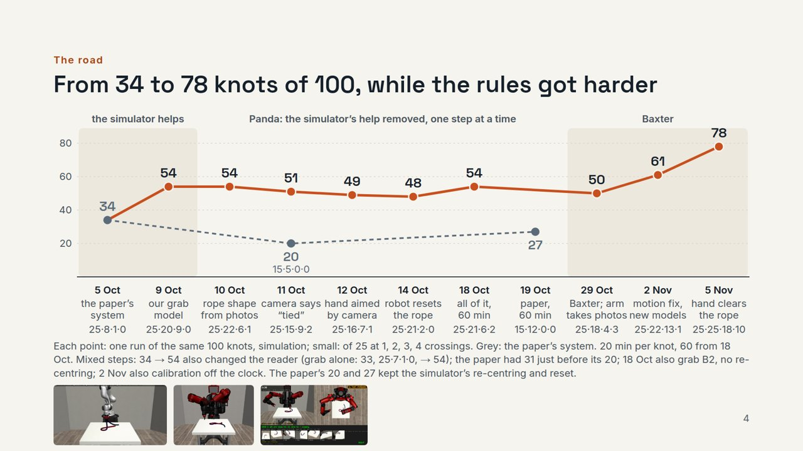
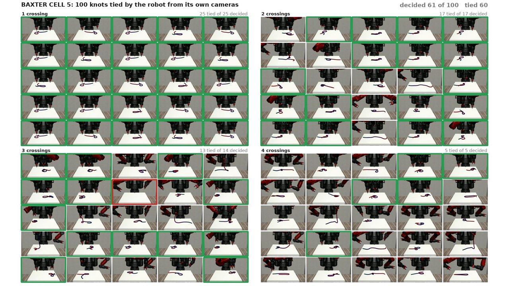

Cognitive Robotics Lab · Technion · November 2026
Research progress by Eitan Frenkel, supervised by Prof. Erez Karpas. Pick one.

1
16 November 2026, 27 slides: every step, what was there, what we did and what came out.
Open the slides →
2
One full run in simulation, 4 to 5 November 2026: 78 of 100 knots tied. Click any knot to watch it.
Open the 100 knots →